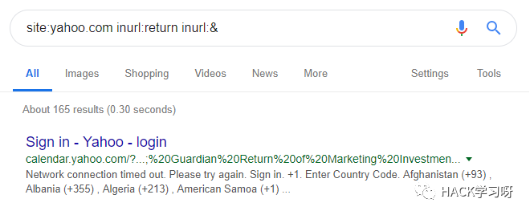

URL 跳转漏洞的利用技巧
URL跳转漏洞仅是重定向到另一个网址，如：
https://www.example.com/?go=https://www.google.com/
当我们访问这个url时，将从example.com跳转到google.com。通常来说，它们被归类到低影响的一类中，甚至，有些程序将它们列入超范围的名单中，且不允许用户访问。
那我们能对它们做些什么呢？一年多以前，我发布了这个教程，当时我称之为“全互联网的问题”，因为Facebook发行其APP时，没有严格要求开发人员正确设置他们的白名单。这
意味着开发人员可以将他们的跳转URL设置为example.com所允许的所有子域。很多网站都采用了“用Facebook登录”的方式，所以只需要在目标网站上设置一个url跳转漏洞，就可以实现账户接管。
从此之后，Facebook和其他第三方登录的开发者已经做出了相当大的改变，以防止此类攻击。但我们是否仍旧可以利用url跳转漏洞做些手脚呢？我们一起来探索吧！
准备工作
首先，让我们先找到一个开放式重定向的url，并探索常见的位置来寻找它们。我们来看看当我们在google中搜索site:example.com，
并且使用以下模板进行检索时会发生什么：（当然，你也可以尝试自己写的变量，你永远不知道会有怎样的发现！）

1. inurl:go
1. inurl:return
1. inurl:r_url
1. inurl:returnUrl
1. inurl:returnUri
1. inurl:locationUrl
1. inurl:goTo
1. inurl:return_url
没有发现？好吧，也没事，让我们在试试使用其网站，并在相同的位置寻找。从我的经验看来，大多数网站会在用户发生登录、注销、改密或注册
等行为后跳转url，并通过处理url参数来完成这些操作。人们通常会忽视一个关键点——邮件中的链接。这些通常是由第三方操纵的。
这些地方都应该是您第一时间要查看的地方，从登录页面开始浏览并测试这些页面。
也不要忘记检查哈希片段！！
提示：试试移动用户代理呢，因为通常移动站点的工作方式不同！
利用url跳转漏洞
此时，我们至少能够发现一个url跳转漏洞，如果还没有发现的话，就继续探索吧！:) 那么，我们一旦发现了一个有效的漏洞，如何利用它呢？
下面就是我将使用url跳转漏洞的最常见的利用方式：
通过配置错误的应用程序/登录流程获取口令
想象下面的场景：当我们登录redacted.com时，看到url是这样的returnto=/supersecure，使用你的口令成功登录后，
网站将重定向到/supersecure?token=39e9334a，然后才会跳转到主站点去。所以，这是否意味着，如果我们将其设置为
returnto=//myevilsite.com，并将这个登录url发送给受害者，，当此网站存在漏洞且用户成功登录网站，那么攻击者可以通过事先准备
好的站点（用户就会被重定向到这里）窃取用户的登录口令了。
绕过SSRF / RCE的黑名单
有些网站会将某些请求列入黑名单，从而只允许访问theirsite.com。在他们的域环境中配有开放式的重定向，有时你可以通过绕过这些黑名单
来实现SSRF或RCE（视情况而言），但这取决于网站的框架和它们处理重定向的方式是什么。
通过 javascript:alert(0) 进行XSS攻击
这种方式不是每次都能奏效的，这取决于网站是如何重定向的。若其实302跳转，则不会奏效；但如果它是通过JavaScript跳转的，那就能成功。
利用文件上传和移动设备的优势
这种方式我还未曾公开讲过，但还是计划给大家分享。由于各种原因，许多网站允许我们上传自定义文件。通常，在访问这些网站时，
系统会自动下载我们上传的这些文件。所以，举个例子来说，你上传了一个zseano.html，并将其链接发送给你的好友，你的好友打开它时，
便会自动下载这个html文件。
但是，你知道吗，移动设备在显示这个链接时，并不只显示其链接和标题，而是显示其内容。不要高兴太早，认为自己已经拿到了XSS，因为移动设备上的浏览器不会执行JS。但是，你可以设置可点击的链接，并添加所有精美的CSS/HTML..它们能够泄露引用者。
现在，想象一下这个场景。你向redacted.com上传一个文件，并且注意到他们的登录流程中有returnUrl，且允许.theirdomain.com。那么，
你刚刚上传的文件就在cdn.theirsite.com上， 堪称完美。将returnUrl设置为cdn.theirsite.com/eg/yourfile.html，
并将这个链接发送给你的 目标 让他登录。登录后，用户将被重定向到你呈现的文件页面。添加一个漂亮的“点击此处继续”按钮，
按钮链接指向你自己的网站，点击后，他们的登录口令将因为引用而泄露。
话虽如此，但是浏览器通常不会泄漏引用。这对我来说可能是极个别的情况，因为我以前发现过类似的问题。但是这个方法还是值得一试的，
你永远不知道它可能会发现什么。
常见的问题和绕过
我总是遇到试图阻止第三方重定向的过滤器。然而，在考虑绕过过滤器之前，人们在测试使用一个开放式重定向的网站的登录流程时，
碰到的一个最常见的问题就是没有正确编码这些值。例如，https://example.com/login?return=https://mysite.com/。
网站或浏览器或许不能识别其返回参数的格式，因此尝试常规编码总是好的，否则，就尝试双重编码。
https://example.com/login?return=https%3A%2F%2Fmysite.com%2F
https://example.com/login?return=https%3A%2F%2Fexample.com%2F%3Freturnurl%3D%2F%2Fmysite.com%2F你是否注意到我们在一个链接中放了两个重定向？我们需要对最后一次重定向进行双重编码，以便浏览器最后对其进行解码并跳转。有时，
我们没能正确的编码，那么，浏览器也不会正确地跳转。
绕过
下面是一些我自己发现的有趣的绕过方式，你可以随时使用，也可以提供其他新的方式。
1. \ /yoururl.com
1. \ / \ / yoururl.com
1. \\ yoururl.com
1. //yoururl.com
1. // theirsite@yoursite.com
1. HTTPS：// yoursite C = .theirsite.com /
1. HTTPS：//yoursite.com#.theirsite.com/
1. HTTPS：//yoursite.com \ .thersite.com /
1. //%2F/yoursite.com
1. ////yoursite.com
1. https://theirsite.computer/
1. （如果他们只是检查* theirsite.com *，。计算机是有效的tld！
1. https://theirsite.com.mysite.com
1. 将他们的域名视为子域名
1. /%0D/yoursite.com
1. 也可以尝试％09，％00，％0a，％07
2. java%0d%0ascript%0d%0a:alert(0), j%0d%0aava%0d%0aas%0d%0acrip%0d%0at%0d%0a:confirm0 ,java%07script:prompt0 ,java%09scrip%07t:prompt0
这就是现在所有的内容，我希望你们能够喜欢，且能根据需要更新某些方式！
推荐阅读：
URL跳转漏洞bypass小结
https://landgrey.me/open-redirect-bypass/
URL跳转漏洞
https://y-hkl.github.io/2018/01/11/URL%E8%B7%B3%E8%BD%AC%E6%BC%8F%E6%B4%9E
浅谈URL跳转漏洞的挖掘与防御
https://www.secpulse.com/archives/102918.html
浅析渗透实战中url跳转漏洞
https://xz.aliyun.com/t/5189

作者：miraitowa2
参考来源：miraitowa2's博客
如有侵权，请联系删除